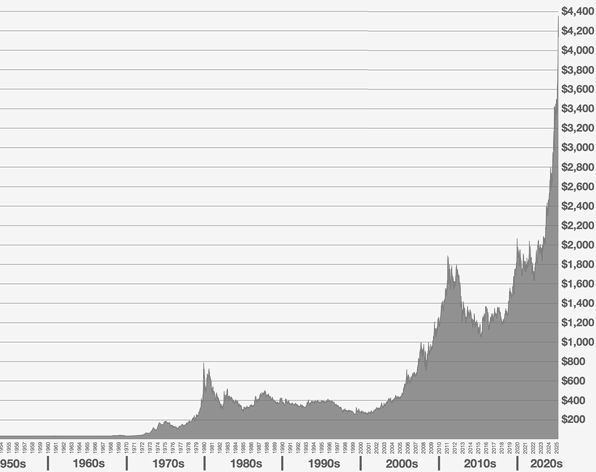

To the Head of the Department of Taxation:
It has come to my attention that members of your department have not been made aware of the wondrous discovery of
a Mr Albert Einstein.
Space is in fact curved. Not simply space but actually space-time is curved.
Your disciples of Mr Isaac Newton might think that gravity is simply a force that acts on all bodies. This is in
fact a complete illusion. It is fictitious.
Gravity is not a force but a consequence of a distortion of space-time.
You see, Newton is correct in his first law:
"A body remains at rest, or in motion at a constant speed in a straight line, unless it is acted upon by a force."
A modern way of expressing Newton's law is "bodies move in geodesics". Massive bodies like the earth cause a curvature of the local spacetime. The apple, upon being released from the tree, looks like it is at rest but is actually moving forward in time at a speed C. As the apple moves forward in time some of this time velocity is imparted into the spatial components. The apple feels no force at all because from the apples standpoint it is simply following a straight line. An object that is completely unchanging will appear to move in a curve when the metric itself is curved.
This brings me to the point of my letter.
Your department has elected to tax the gains of my capital; in this case my gold.
On the surface this seems fair. I am gaining so, some of that gain is redistributed.
The logic here follows from Mr Karl Marx.
M → C → M'
where M is money and C is capital. Ideally M' > M.
C → C' with ideally C' > C
We can easily see this through the ever growing population of rabbits. Mr. Leonardo Bonacci demonstrates how starting with just two rabbits one can end with hundreds in just a few generations.However this reproductive analogy does not extend to gold or silver. Two golden ingots left in a chest do not annually materialize a third or even a Shekel! Yet when we look at the dollar amount for a constant mass of gold we see a curve (see attached graph).
Your department concludes that I have made "gains" because we see an exponential monetary increase over time. However my gold in, in every sense, is stationary. These gains just like the "force" of gravity do not exist. It is the yard stick of measurement (spacetime or money) that is itself bent! The term we use for the distortion of the monetary yardstick is called inflation and it is due to (non-linear) depreciation of the dollar.
To conflate inflation with gains is as absurd as concluding my ingot has grown due a measurement by a miscalibrated scale. And to tax these "gains" is equivalent to cutting off a section of my gold every year recursively. Taxation might not be theft but breaking into my vault to cut off portions of gold certainly has that odor. (Of what will you do when I have but an atom of gold left? reduce yourself to fission?)
I hope I have made it abundantly clear how important a metric is when doing computations involving displacements. In the spirit of this letter I have enclosed £ 30 (pounds stirling). Given the current price of silver this should more than cover my capital gains tax for this year.